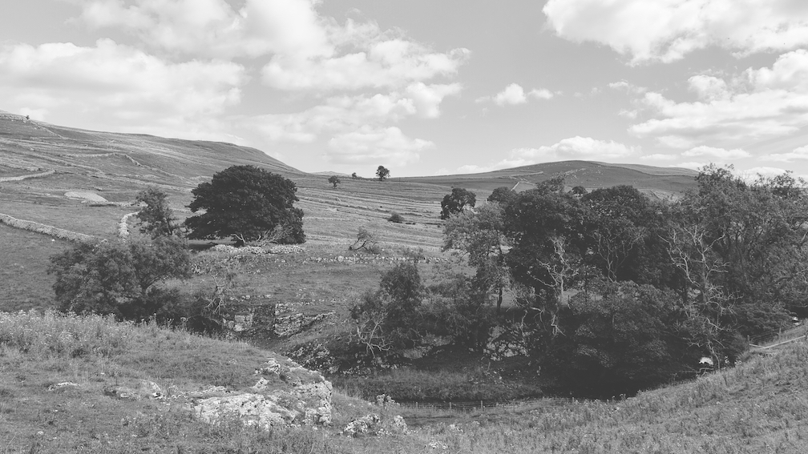

Elmet Brae EB01 - Untitled Compilation
A community compilation of soundscapes/ambient/noise/drone from Merveilles Town members and friends.

Landscape near Malham Cove, August 2022
These projects work best with a theme and some guidelines: keep it sparse and abstract, interlude tracks no shorter than 30 seconds, and full tracks no longer than 5 minutes. Theme is "The Land", and the hope is a collection of minimal textures and abstract sounds that'll sequence well together. Deadline for submissions is 24th October.
I'll do some thinking about logistics, distribution (Bandcamp most likely), some informal memorandum of understanding (just consent for me to distribute) etc etc.
Send a DM if you'd like to contribute or help, ask questions or offer advice, or to get my email address to send media: @oppen@merveilles.town
Thanks, Ö